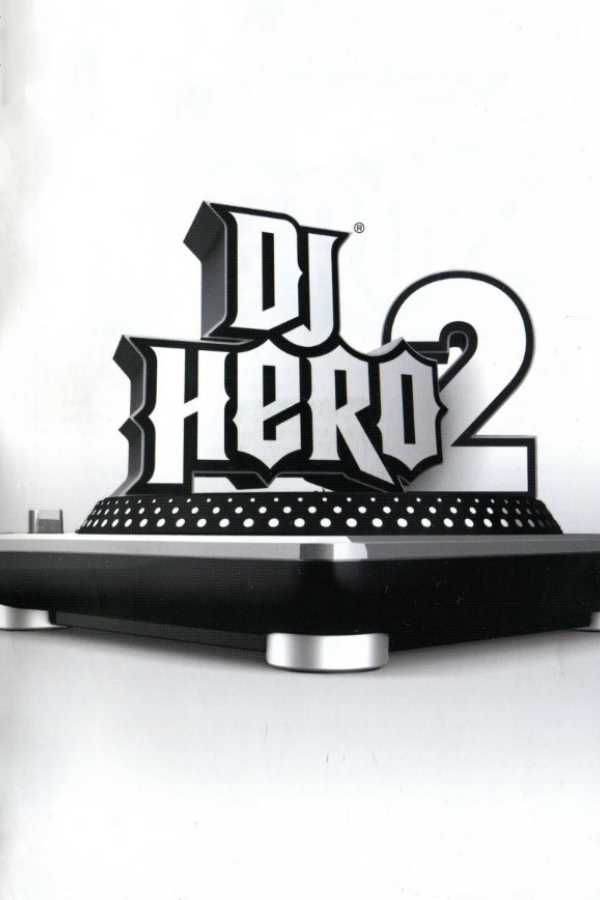

DJ Hero 2
DJ Hero 2
Details
|  | |
| Playtime | Not Played |
| Last Activity | Never |
| Added | 4/29/2025 4:54:57 |
| Modified | 4/29/2025 9:23:37 |
| Completion Status | Not Played |
| Library | Playnite |
| Source | |
| Platform | Sony PlayStation 3 |
| Release Date | 10/19/2010 |
| Community Score | |
| Critic Score | 86 |
| User Score | |
| Genre | Rhythm |
| Developer | FreeStyleGames |
| Publisher | Activision |
| Feature | Multiplayer Single Player |
| Links | Wikipedia Official website |
| Tag | |
Description
DJ Hero 2 is a 2010 rhythm game developed by FreeStyleGames and published by Activision. It is the sequel to DJ Hero (2009), a spin-off of the Guitar Hero series. The game was released worldwide in October 2010 for PlayStation 3, Wii, Xbox 360. DJ Hero 2 uses a special turntable-controller, the same as introduced in DJ Hero, to simulate turntablism, the act of creating a new musical work from one or more previously recorded songs using record players and sound effect generators.
Similar to DJ Hero, players in DJ Hero 2 follow specific actions on the turntable controller in time to marked scrolling indicators on the game's screen, earning points for correctly performing actions in time. The game includes a new freestyle mode, giving the player the chance to freely crossfade between tracks, scratch a section of a mix, or add sample effects during marked sections. The game features 83 remixes of two different songs across numerous genres, with further mixes available as downloadable content. Most mixes have been assembled by FreeStyleGames, but other professional DJs, including David Guetta, deadmau5, DJ Qbert, Tiësto and RZA, have provided both their mixing skills and character avatar for the game. Players can challenge these mixes at any time in a Quickplay mode, progress through them in the single-player Empire mode, or play cooperatively or competitively with a second user in offline and online game modes. A third player can also participate through singing the mix' vocals.
DJ Hero 2 was well received by critics, receiving praise for maintaining and improving upon the core elements of the first game, and for a soundtrack featuring a wide selection of genres. However, sales for the title were low, failing to reach similar numbers as DJ Hero from the previous year. In conjunction with poor sales from the Guitar Hero franchise, Activision announced the cancellation of further development in February 2011, leaving DJ Hero 2 as the final multi-platform iteration of the DJ Hero franchise.
Gameplay
DJ Hero 2 follows from its predecessor in simulating the performance of a disc jockey mixing one or two songs using a special turntable controller. The controller, the same unit as shipped previously with DJ Hero, includes a rotatable turntable to use for recording scratching, three "stream" buttons to match notes from the two music tracks and an effects track, and a slider to control the crossfade between tracks. These actions are presented to the players through on-screen notation that scrolls in time with the music. Players score points by performing the actions correctly, but are not penalized otherwise. By successfully completing a consecutive set of actions, the player can increase their scoring multiplier up to 4x; the multiplier returns to 1x should they miss any actions. Certain marked sections, when played correctly, fill a "Euphoria" (the "Star Power" for this game) meter which can be unleashed using another button on the controller and will temporarily double the scoring. The player can also earn the ability to rewind a song by a few seconds by playing a long string of consecutive notes. They can rewind the song by quickly spinning the turntable in reverse; the rewind effect can be used to either correct a mistake or further boost one's scoring.
Small changes have been made in the turntable playback within DJ Hero 2: freestyle effects samples, previously based on game-wide preselected "effect packs", are mix-specific, and the game does not penalize the player for small variations in fast scratching sections as long as it follows the general beat of the song. Specially marked freestyle sections, previously limited to only added sample effects over the track, allow the player to freely mix between the two tracks, use their own scratch effects, or add effects hits while within these sections. The display for these freestyle sections shows marks where switching between the tracks would achieve a strong audio effect, and the player is graded on how well they hit these markers after the end of each mix.
In addition to using a turntable, players have the option to sing or rap to the mixes' lyrics, similar to vocal parts in current Guitar Hero or Rock Band games using a compatible microphone controller from most previous rhythm games. The game will score vocals based on the matching of pitch, beat and rhythm.
DJ Hero 2' features an improved single-player career mode called "Empire". Empire provides more structure for the player to proceed through the game than the simple set lists used in DJ Hero. Through Empire mode, the player works though a number of pre-determined setlists and boss battles (as described below) with the celebrity avatars and fictional DJ's at one of six different venues, earning stars that unlock additional venues to play at. Completing certain setlists or battles unlock new characters, outfits for those characters, and virtual turntable decks for the player. Five of these decks are "power decks" that slightly change the scoring mechanism or play style of the game; one increases the maximum multiple to 5x, while another one increases the rate that notes are displayed but increases the base scoring system.
The primary focus of DJ Hero 2 has been the social aspects, according to FreeStyleGames' creative director Jamie Jackson; as such, many of the games' new modes feature multiplayer considerations. The game supports the "Party Play" mode introduced in Guitar Hero 5, allowing players to jump into a song, alter the difficulty during gameplay, change between turntable and vocals, and leave at any time, while the game continues to run in a jukebox mode. Several new competitive modes engage two DJ players against each other; some modes have both DJs performing alongside each other but with competitive edges such as a "Checkpoint" race where each DJ attempts to earn the best score within a section of a song. DJ Battles see two DJ's performing call-and-response style along with open freestyle sections. The online mode includes a simple role-playing video game mechanic whereby participating and winning battles with other players earns the player DJ Points that lead to level increases and additional perks.
The game does not include "DJ vs Guitar" mode that was featured in DJ Hero, where a second player could use a compatible guitar controller to play alongside the DJ player.
Development
DJ Hero 2 was officially announced in June 2010 for release in the last quarter of 2010. Prior to the game's announcement, Activision revealed a month before the game's release that it is actively seeking artists for downloadable content and a sequel to the game. David Guetta has stated that he was set to work on the game's sequel, to arrive late in 2010. Activision CEO Bobby Kotick stated that despite low sales of DJ Hero, they are committed to continuing the series, with the sequel due in 2010. The sequel, DJ Hero 2, was further confirmed during an Activision investors report for 2009, citing it as one of only 2 major Guitar Hero titles to be expected from Activision in 2010, with an expected late-2010 release date.
Work on DJ Hero 2 started some months after the first game was completed, as the development team had endured heavy working hours to meet the release deadline. FreeStyleGames' creative director Jamie Jackson said that DJ Hero 2 took about seven months to complete. While they were able to easily build on the existing framework for DJ Hero, FreeStyleGames wanted to do more than just include new mixes, and sought to include additional features such as the Battle Mixes into the game. Many of the game's new features are a result of feedback from players, including the game's social modes and improvements in the game's interface to provide a cleaner look and instantaneous visual feedback to the player. The team also worked at improving the game's graphics; the appearance of DJ Hero's graffiti-based menus gave the impression of being a hip-hop game, but FreeStyleGames wanted to distance DJ Hero 2 from that. They also wanted to clean up the gameplay's interface, providing better feedback to the player and making it easily to tell when they were winning or losing. While DJ Hero 2 does not use Kinect or PlayStation Move motion-sensing technology, Jackson had not ruled them out for a future iteration of the game.
Another step to move the game from the apparent hip-hop nature was through its song selection. Jackson felt the first game was weighted too heavily to the genre, with about 60% of the songs being hip-hop. The songs in DJ Hero 2 represent a wider variety of music, including dance, drum and bass, and techno, along with some contributions from hip-hop. Jackson noted that they were able to work better with artists and publishers for DJ Hero 2, after the successful launch of the first game; with artists and publishers now knowing what to expect, "there is more understanding, so it has opened the doors to us in terms of getting more popular music", according to Jackson. However, licensing for such music remained a difficult barrier. Mixes for DJ Hero 2 are made first through computer-aided mixing of the two song tracks combined with effects noises, with simultaneous authoring of the gameplay markers. Noise for the scratching sections are filled in by recording the sounds of the tracks actually scratched on a DJ deck.
Usher contributed his song "OMG" featuring will.i.am for DJ Hero 2, which he and will.i.am performed live at the 2010 Electronic Entertainment Expo. Usher had previously been approached by Kotick before the release of DJ Hero for future projects for Activision. Usher found, after following the success of DJ Hero, that the game was "very interesting" as a means of connecting younger gamers to music such as his that they would not be able to experience live at a club, leading to his desire to be a part of the sequel.
FreeStyleGames found that by selecting mix artists such as Deadmau5 and Tiësto who are more widely known than some artists in the first game, they were able to give DJ Hero 2 a different feel, embracing the theatrics of these artists. FreeStyleGames had tried to include Tiësto within the first game, but could not do it within the deadline, but instead was used as part of the first game's promotion, and later would be used as Activision's "ambassador" for the game to Europe. Furthermore, the game's soundtrack has been selected to include more dance and pop tracks taken from European artists to make the game more Euro-friendly.
Promotion
A demo for DJ Hero 2 was released to the PlayStation network and the Xbox Live on September 7, 2010. The demo contains four mixes, two of which were playable: Pussycat Dolls featuring Busta Rhymes - "Don’t Cha" vs. Pitbull - "I Know You Want Me (Calle Ocho)" and Lady Gaga featuring Colby O'Donis - "Just Dance" vs. deadmau5 - "Ghosts N Stuff". The mix Estelle featuring Kanye West - "American Boy" vs. Chic - "Good Times" was used as a tutorial and the mix MSTRKRFT featuring N.O.R.E. - "Bounce" (Beat Juggle) could be heard in the menu background.
A viral browser game, DJ Hero 2 Mix 2Gether, was released on October 17, 2010. The viral game was made by digital agency fish in a bottle and features a cut down version of the full game product. Three mixes are included in the viral and are all playable: Lady Gaga featuring Colby O'Donis - "Just Dance" vs. Deadmau5 - "Ghosts N Stuff", Blakroc featuring Pharoahe Monch and RZA - "Dollaz and Sense" and Tiësto and Sneaky Sound System - "I Will Be Here" vs. Tiësto - "Speed Rail". Unique to the viral game is a "Create A Mix" mode which allows players to create their own mixes, share them and challenge friends through email, Twitter, facebook and Myspace.
DJ Hero 2 was sold with various promotional items. Within Europe and select stores in North America, players that purchased the game in one of two bundle packages (either with one or two turntable controllers) received the predecessor DJ Hero free. Other North American stores offered carrying cases for the turntables, MP3 versions of selected mixes, or redemption codes for in-game customization options.
Post-release
A glitch was observed by players on Xbox 360 where, if they were playing while online and had exactly 100 friends attached to their account, the game would freeze and/or they would be unable to play online. Activision issued a patch to correct this a few days after release.
The music video for Tiësto's "Speed Rail" is composed only of footage from DJ Hero 2 including the Tiësto avatar.
Soundtrack
DJ Hero 2's setlist includes 83 mashups from nearly 100 songs from about 85 different artists. Game Informer stated that the game's soundtrack still strongly represents the genre of hip-hop, but adds more elements from electronica, pop, and dance. David Guetta, Deadmau5, DJ Qbert, Tiësto and RZA are playable avatars within the game and they will help create mixes for the game. Most of the in-game scratching was performed by former World DMC Champion DJ Blakey, and some by Joe Lenzie of Sigma.
DJ Hero 2 supports downloadable content in the form of new mixes that can be purchased from the consoles' respective online stores. In addition, through an additional free add-on released in November 2010, players will be able to purchase existing downloadable content from the first game to use within DJ Hero 2. Activision's February 2011 decision to shutter their Guitar Hero development initially stated that no further downloadable content will be forthcoming for the title, but due to "continued support" from their fanbase, Activision has since decided it will continue to release downloadable content for the game through at least March and April 2011 with packs that were in the works prior to the closure of Guitar Hero.
Reception
DJ Hero 2 was well received by critics, who felt the game was a significant improvement in both gameplay, presentation, and song selection from its predecessor. Michael Brown of 1UP.com noted while there was very little overall change to the gameplay, "it's the minor tweaks that make it a definite improvement over the original". Keza MacDonald of Eurogamer believed that DJ Hero 2 was "much slicker, clearer and more tasteful" with changes in presentation and interface that quickly allows the players to jump into the game. Ben Kuchera of Ars Technica called the title "the best kind of sequel" as it retained the best features of DJ Hero and added further improvements atop of those. Matt Wales of IGN noted that the early difficulty levels of the game were much more suited to beginners "to make for a more convincing DJing experience, without sacrificing that all-important accessibility".
Critics praised the new freestyle features into gameplay, citing the overuse of the Flavor Flav default sample in the first game. MacDonald favored how FreeStyleGames transformed the limited freestyle sections of the first game into "an integral part" of the sequel. Matt Helgeson of Game Informer stated that the nature of DJ Hero 2's freestyling made him feel that he was "helping craft the mix, not just hitting buttons in time". While the addition of new multiplayer modes was well-received, many felt the vocal track addition did not work out well. Chris Watters of GameSpot noted that "the singing evaluation doesn't feel as slick as in other games", and unless the player knows the music from both tracks of a mix, singing the back-and-forth mix "isn't all that fun". Helgeson commented that attempting to sing lyrics from two separate songs "feels like playing karaoke game in the grips of a seizure".
Reviewers found the soundtrack to provide a wider range of genres, moving away from hip-hop and into house and dance genres, to appeal to more players. Helgeson considered that the mixes were "uniformly great", and balanced popular artists with skilled DJ mixers. MacDonald stated the soundtrack was "faultless" and that while featuring a large number of songs from the club scene, the soundtrack is "still a powerful draw if you don't know or even like the music". Official Xbox Magazine UK's Mike Channell believed the "mashups also feel even more playful this time around", creating new interpretations of the lyrics of songs through the mixing. Cian Hassett of PALGN called the setlist "the most incredible fusion of contrasting genres known to man". Some critics commented that they felt the first game's track list was better; Damien Hatfield of IGN felt there was "more variety" in the original game's mix and better representation within certain genres, while Brown favored DJ Hero's set for "how it mixed together frequently disparate tracks" and that many mixes in the sequel favored too much of one song in the mix.
The NPD Group's North American sales estimates for DJ Hero 2 during its launch month were 59,000 units. Combined sales in North America of DJ Hero 2 and Guitar Hero: Warriors of Rock were below one million in 2010, 63% below the total sales of Guitar Hero 5, DJ Hero, and Band Hero from 2009. As a result of faltering sales for its Guitar Hero series, Activision shuttered its Guitar Hero division, cancelling at least one planned game for 2011. The closure also affects the DJ Hero series, as Activision has stated that they do not expect to publish a music game during 2011.
During the 14th Annual Interactive Achievement Awards, the Academy of Interactive Arts & Sciences nominated DJ Hero 2 for "Outstanding Achievement in Soundtrack".